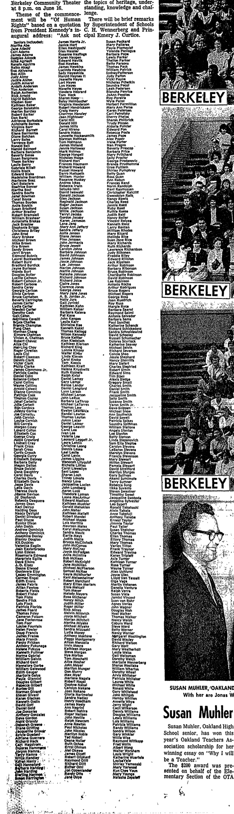

Lael Leslie
Grandmother of Genevieve Elisa Symanski Nelson, wife of Peter.
Living. As for every living relative on this site, the birth date is given by year only, and no current address is shown.
Lael Leslie is the daughter of Williamar Leslie and Edith Evelyn Muir2,3.
Family
- Parents
- Williamar Leslie 1913–1992 and Edith Evelyn Muir 1916–2018 documented
- Partner
- John Grattan Fitz Gibbon Sr. b. 1934
- Children
- Tristram Stuart Fitz Gibbon b. 1963 documented
- Partner
- James Lepowsky
- Children
- Mei Lepowsky adoptive
Life events
| Event | Date | Place and details |
|---|---|---|
| Education | 16 Jun 1961 | Berkeley, California, United States Graduated from Berkeley High School, Berkeley, California, at commencement ceremonies in the Berkeley Community Theater on 16 June 1961.1 |
Records


Sources
- Berkeley High School Graduates, Oakland Tribune (Oakland, California), 28 May 1961, p. 136.
BERKELEY, May 27 — ... Diplomas will go to some 650 Berkeley High School gradu- ates at ceremonies in the Berkeley Community Theater it 8 p.m. on June 16. ... Seniors Inctuuded: ... Christine Leong Dennis Lesea Lael Leslie Carol Levin
Translation: BERKELEY, May 27 — Diplomas will go to some 650 Berkeley High School graduates at ceremonies in the Berkeley Community Theater at 8 p.m. on June 16. ... Seniors included: ... Christine Leong, Dennis Lesea, Lael Leslie, Carol Levin
Graduated from Berkeley High School, Berkeley, California, at commencement ceremonies in the Berkeley Community Theater on 16 June 1961.
- Peter's tree, danenberg.sql, 2007–2015, parentages 20.
- Obituary: Edith Evelyn Leslie (Dec. 21, 1916 – Feb. 8, 2018), The World (Coos Bay, Oregon), 17 February 2018.
She married Williamar Leslie, a fellow Stanford student from Mountain View, Calif., June 2, 1941, in the Stanford Memorial Chapel. … Edith and Williamar lived in Berkeley, Calif., where Edith taught English to recent immigrants. They raised three children, Lael, Lorin, and Lann
father: Williamar Leslie; mother: Edith Evelyn Muir